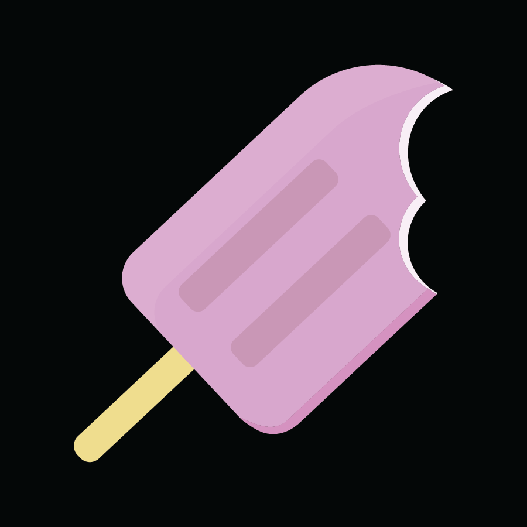
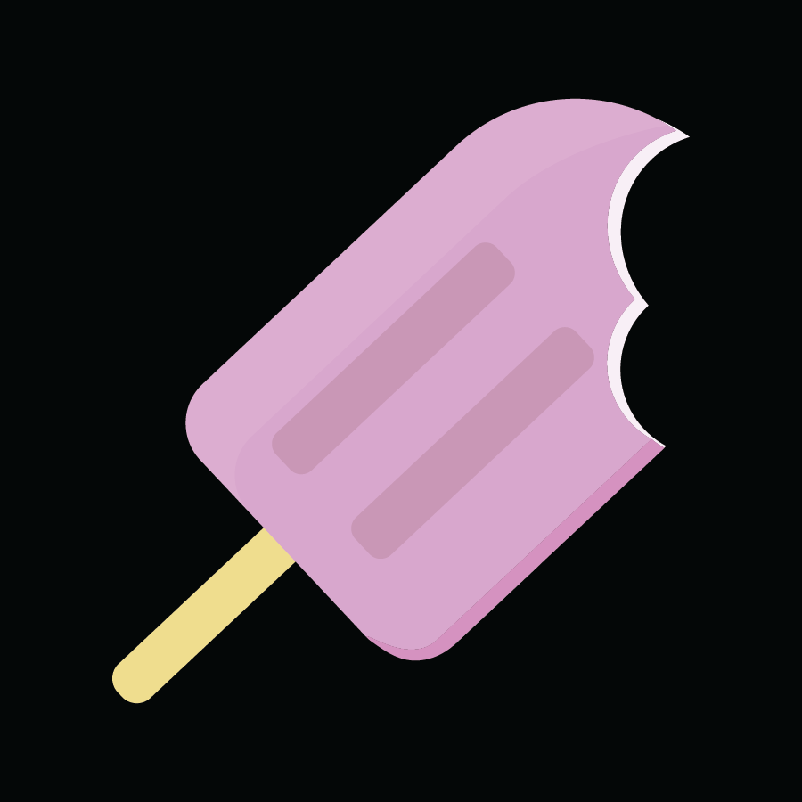

Hello, I'm Stormy.
Web Developer - Graphic Designer - User Experience Designer
Web Developer - Graphic Designer - User Experience Designer
I’m a creative soul who was born and raised in Orange County, California. When I’m not focusing on academics I like to spend my time learning new skills on the Adobe Suite, programming, taking photos, drawing, and drinking lots of coffee.
My mind is always filled with curiousity. I’m constantly teaching myself new skills and looking for new opportunities to learn from people. I might not know many things, but I'm always ready to find out what's new in this exciting world.
In late April, I was spending my time binge watching Portlandia- a satirical sketch television show based in Portland, Oregon. The show got me thinking about how much I appriciate it when shows and other sources of entertainment are able to expose me to different issues in communities with me being genuinely interested in their content.

When it comes to learning about world events and politics, watching shows like CNN and MSNBC gets dry pretty quickly. They never have formated a way to grab my interest as a young adult. However, someone such as John Oliver can have a segment on a current world issue that not only is entertaining, but help me stay informed and be more aware of the world around me than before.
Now don't get me wrong, CNN, The Onion, New York Times, and so on are great for certain people- but usually adults that arent part of the millinial crowd. And that let me to think, "What if I created a website that's just for millennials? It would be relatable and informative." And I thought of the best way catch the younger crowds attention with more mature article reads than a typical BuzzFeed page and that would be through something I know millenials love the most: Humor.
People my age have become masters of creating humorous content. With social media on the rise, there's humorous content created and passed on by the millions every day through memes, Reddit posts, Vines, and the list goes on and on. But not only has that made millenials develop a great semse of humor, but many young adults have used humor as a way to get their political message across or make others think deeper about a concerning issue.

Commentary about how people raged on social media about what the proper way of handling the situation of a child falling into a gorilla pit with no experience with animal training or creditials proving they fully undersrand the behavior of gorillas.
Millenials have the humor and critical thinking skills to spread their message to large audiences to get them to look at matters in different perspectives, however, when it comes to large mews content platforms- it's mainly people who are 30+ to writters leaving little room for young adults to have their voices heard.
And that's where my website, Mezz Pad comes in.
What is the purpose? The best way I can describe Mezz Pad is its The Onion for millennials. Mezz Pad is an online presenting noteworthy events according to Hipsters AKA millennials. Showcasing articles from both liberals and conservatives perspectives to inspire thought provoking discussions.
Target Audience: The audience I want to reach out to the most is of course, millennials. Teens and adults ages from 16 to 26. Some shared characteristics of them would be being tech savy, interested in reading news/sharing memes, and browsing through the internet daily in search of humorous content.
Direct competitor: The Hipster Conservative
http://hipsterconservative.com
Website description:
“The Conservative Hipster is an internet journal in which we attempt to publish essays and criticism and other fun stuff on topics of interest to hipsters, conservatives, or both.”
Strengths
Weaknesses
Indirect Competitor:The onion
Website description:
The Onion is an American digital media company and news satire organization that publishes articles on international, national, and local news.
Stengths
Weaknesses
Humorous content other than memes that millennials can relate to and share with others
How to satisfy the need:
Name: Alexis Hopkins
Attributes:
What would you like to see in a satirical news site for millenials?
"All I see these days is satirical sites that continue to push out liberal content. As a conservative, I feel like I’m constantly being ridiculed for my views and I would greatly apreciate to see a satirical piece from a conserative standpoint for once.”

“I would love to see content about current college students and recent grads. I’m in my senior year in college- getting ready to jump into the real adult world of looking for employment, moving to a new city and have a new set of challenges ahead of me. But I noticed a lot of big news sources aim to talk about people who already have their life together. Reading news about the issues young adults face wouldbe nice to read and share to others.”

Name: Steven Francis
Attributes:
What would you like to see in a satirical news site for millenials?
“Well, I currently work in Sillicon Valley and live in the bay area which the media dipicts as a tech playground for us young “hipsters” but I’ve also noticed another side of the Bay that I don’t hear about often on the news such as sexism, pompus personalities, and gentrification- which I wish more people would get to hear about.”
“Not only do I read the articles for a good laugh, but I also like challenging some of my beliefs every once in awhile that it gets me thinking about the effects of my peers and my own actions. Overal it's great to find content to read and share with others while giving us all some food for thought.”
I decided to conduct a survey that aims to understand what millennials look for in satirical news sites, what interests them, and how I can develop Mezz Pad to fit users interests more than existing competitors.
I posted the survey on Reddit and got 28 responses. The data I found to be the most important is listed below:
Article categories/Navigation bar
You're probably wondering, "What does Mezz Pad mean?" Well, I searched around for the fresh lingo that young people are using these days and I came across a "Hipster Dictionary". I learned that mezz means that something is the best, it's supreme- and all millenials love the best of the best. While pad means paper, such as newspaper. So the meaning of Mezz Pad is the best news around, something that millennials can't wait to read.
To get my creative juices flowing, I grabbed a peice of paper and wrote the word "Hipsters"- Mezz Pad's main focus- on top. I then wrote all the charactertics I thought made up hipsters. I thought of things like vintage, vegan, and casual. But what stuck on my mind the most was the word "mustache".
Mustaches and hipsters go together like mac and cheese. A signatue hip look is a well groomed 'stache to go along plaid shirt and blue jeans.
One way I thought I could incorporate the mustache idea into my logo is by making the "M" in Mezz Pad look similar to a mustache.
I then used illustrator to give it osme life.
It didn't look good to me so I thought maybe adding some dimendion to it would help.
I didn't like how that turned out either. I spent some time wondering how I could improve my logo. I wanted a logo that looked like a mustache, but none of those sketches really looked like one. They didn't have the big iconic round curves and any real hint of a mustache other than the slight upward curve at the bottom.
After making a couple of adjustments, I created a logo that I did like.
There's a few reasons why I was happy with this logo:
Ny goal for designing Mezz Pad was making it look modern. I tried doing so by creating an asymetric layout to give viewers interest. I also gave an incongruent frame to a few articles to add onto the asymetric aesthetic.
I decided to opt out of the hamburger menu trend and instead use a top tabbed menu instead. I chose this option because it clearly states what each tab is for, it allows users to quickly switch to a differen't page, and users can easily see what page they are at a glance.
The color palette I chose to work with is white and hot pink. Hot pink is a color I noticed used by companies such as T-Mobile to symboloize fun and modern, plus appealing to the younger crowds- like millennials.

The main thing I learned after designing Mezz Pad is: DON'T RUSH. A good design takes time. I might spend hours redesigning something over and over until I get a feeling that it's right, and I can't get flustered over it. Taking out the time to do research on competitive analysis, understanding what users want, and getting feedback on my design is a long process, but those are the steps needed to create a good product. And overall, I'm happy that I took out the time so I could create something that I am proud of.
This motion graphic was made with the help of watching a tutorial on using Adobe After Effects on Skillshare.

Title: Sleepless Night
This illustration was inspired by one of my favorite YouTube channels, Kurzgesagt – In a Nutshell.

I created this icon set because of my love for sweets. My sweet tooth was my inspiration for these colorful treats.

 



Position: Graphic Design & Marketing Intern
Duration: May 201 - August 2016
Link: SweetEquations.com
Sweet Equations is an up and coming bakery in East Hartford, Connecticut. They create unique cakes and "uncupcakes" which look like regular cakes and cupcakes on the inside, but on the outside, they're decorated with a variety of candy. I was very excited to work for them since I have a huge sweet tooth. I couldn't have asked for a sweeter internship.
Here's a couple of their unique treats:
As an intern, my main job was to help Sweet Equations increase their followers on Facebook and Instagram through engaging marketing techniques.
I started by researching the best Instagram user engagement stratagies that I could incorporate into Sweet Equations. After browsing through popular bakeries on Instagram, I noticed a few great strategies to use:
Share a video/photo of your or your employees working. Show customers the great faces who make the food they love.
Also post photos of customers and share something about them. Show customers that you care about them and they're likely to come back.
Take eye catching photos of your treats. The more unique and dynamic your photo is, the more likely users will be drawn to look at your profile, follow you, share the photos and come into the bakery.
Use hashtags like #bakery, #cakes, #sweettreats and others so that users can find your post when they’re searching for treats.
This tactic comes at a price, but when done right it can make a large impact on your account.
To get started, search for large bakery accounts (20k 200k) followers and and look for an email address on their profile. If the address is listed, it usually means that they’re open to sponsored posts. I can send them an email asking about sponsored post pricing, I’ve seen that the average cost is around $20 $50 per post depending on the size of the following. And Sweet Equations can even send them a cake for them to review and share. The more natural and genuine a sponsored ad looks, the more engagement you’ll get.
I personally find it to be one of the best strategies to use. Most accounts are flooded with followers after they get sponsored.
I highly recommend Sweet Equations to use Iconosquare (http://iconosquare.com). They provide advanced analytics about instagram accounts to help gain more followers and engagement. The features I think that would help the growth of Sweet Equations are:
Engagement
See the growth history of likes and comments received.
Hashtag Performance
See which hashtags are the best to use to gain the most likes, views, and follows.
Optimization
See which times are the best to post and see the lifespan of your posts.
Rolling month analysis
See content, engagement and follower stats within the last 30 days.
My next task after creating user engagement strategies was to create an Instageam account for them and gain 10 followers within a week. I didn't have the opprunity to take any own eye catching photos of their cakes due to me being in a different state, and their photographer wasn't avaibable to take any new photos, but I did the best with what I had an ended up helping them gain 25 followers in one week.
My next assignment for Sweet Equations was to learn about affiliate marketing. I was given a week to find content about what affilliate marketing is and how I can attract others to become an affiliate for Sweet Equations by creating an affiliate page on their website.
During this time, their website was under construction so they didn't have anything for me to get an idea how their website is strctured except for a shot of their homepage.
Based off the homepage, this is the afilliate page that I came up with:
I got feedback on the affiliate page and the creator of Sweet Equations, Sade, asked me to include a different banner and include extra information about being an affiliate. After discussing and redesigning the affiliate page, the final version came out like this:

I was very happy with the result because I was able to make the page inviting and provide information in a fun and intriguing way by including icons that emphasize the best perks of being an affiliate and including additional reasoning to become an affiliate without the page looking cluttered.
Interning for Sweet Equations was a fun experience. I didn't get to do as many design projects as I had hoped, but I gained more knowledge and skill with marketing to make up for it. Getting to help someone's new business succeed is an experience I'll always remember.
I created this icon set because of my love for sweets. My sweet tooth was my inspiration for these colorful treats.